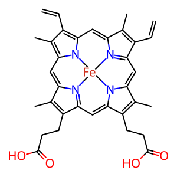
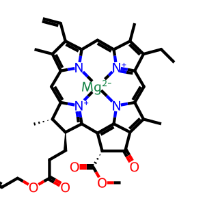

Skip to content
Different Species.
We are biotechnologists and bioengineers, inspired by nature’s own design, working to help animals live healthier lives and to support the protection of species for future generations.
LifeConnected
Explore species View all species
Dog Multiple
Cat Three main AB blood types
Camel Remarkable adaptations
Orangutan Threatened species
Marine Turtle Threatened species
Horse Distinct red-cell groups
Elephant Extraordinary biology
Lion Wildlife health
Nature’s bioengineering. Over millions of years, evolution has conserved and refined the core of hemoglobin-based oxygen transport. BHOC bioengineers build on this shared biological foundation to advance precision oxygen therapeutics for animal health.
Our science
Heme (Hemoglobin) Chlorophyll Plant Systems

Iron (Fe)Oxygen transport Heme b · ChEBI, EMBL-EBI
“Nature

Magnesium (Mg)Light absorption Chlorophyll a · ChEBI, EMBL-EBI Related chemistry. Heme and chlorophyll belong to the tetrapyrrole family. Their metals, ring structures and side chains differ.
Explore chlorophyll ↗
One living planet. Photosynthesis converts light into chemical energy. Animal cells use oxygen to help release energy from nutrients.
Different processes. Shared foundations in the chemistry of life.
× Let’s build a healthier tomorrow For veterinary research, conservation collaborations and strategic partnerships, contact BHOC Therapeutics.
Email our team info@bhoctherapeutics.com
× BHOC Veterinary From nature. The BHOC Species & Biodiversity Protection Initiative connects oxygen-delivery science with the future of animal health and species protection.
Our foundation is comparative biology: different species have different blood-group systems, yet most vertebrates share hemoglobin-based oxygen transport. We explore how this foundation can inform species-specific research and development.
Meet BHOC Therapeutics × Veterinary applications Oxygen delivery. BHOC, Biological Hemoglobin Oxygen Carrier, is a development direction in precision oxygen therapeutics. Veterinary research asks how tissue oxygen delivery might be supported when anemia or blood loss limits oxygen-carrying capacity.
A canine regulatory precedent In 1998, the FDA approved Oxyglobin (hemoglobin glutamer-200, bovine) for anemia in dogs. This historical HBOC approval is specific to that product and indication. It does not establish BHOC approval or suitability in other species.
Read the original FDA approval ↗ Our research interests include companion-animal care, emergency oxygen support and the practical challenges of wildlife medicine. Dosing, safety and efficacy require evidence for each species and application.
Discuss a collaboration × The science of oxygen delivery A biological foundation. Hemoglobin binds oxygen through iron-containing heme groups. Oxygen delivery also depends on blood flow, oxygen affinity, microcirculation and tissue demand.
Hemoglobin-based oxygen carriers (HBOCs) investigate a cell-free approach to oxygen transport. BHOC builds on this field as a Biological Hemoglobin Oxygen Carrier development platform. The objective is tissue oxygen support, complementary to the wider functions of blood.
Nature’s bioengineering Most vertebrates use hemoglobin, with important exceptions such as Antarctic icefish. Conserved chemistry is a starting point for research; species-specific physiology still matters.
Heme & chlorophyll Both belong to related tetrapyrrole chemistry. Heme coordinates iron; chlorophyll coordinates magnesium. Their ring structures and side chains differ, as do their biological roles. Hemoglobin transports oxygen; chlorophyll absorbs light in photosynthesis.
Molecular structures: ChEBI, EMBL-EBI. Heme b (CHEBI:26355) and chlorophyll a (CHEBI:18230).
Scientific references × Evidence & context Scientific references. Catalogue of Life Animalia: 1,780,634 species. Version 2026-08-26 XR, issued 26 August 2026.
IUCN Red List 2026-1 175,909 species assessed; 49,505 threatened. Release: 9 July 2026. Totals across assessed taxonomic groups.
ChEBI: heme Iron-containing tetrapyrrole chemistry.
ChEBI: chlorophyll Magnesium-containing photosynthetic pigments.
Corliss et al., 2019. Antarctic icefish physiology Biological context for vertebrates without circulating hemoglobin.
FDA: original Oxyglobin approval summary NADA 141-067, 12 January 1998. Canine anemia indication.
Scientific information relevant to BHOC and oxygen therapeutics. Third-party references do not imply affiliation or endorsement.
× Different species. Shared biology.
× Explore species Different lives. Explore the biology and conservation context of our featured species.
Species inclusion illustrates the initiative’s scope. It is not a claim of treatment approval.
× Explore BHOC Veterinary. Search species, science and our initiative
Explore the science, species and references below. Interactive carousels and search require JavaScript.